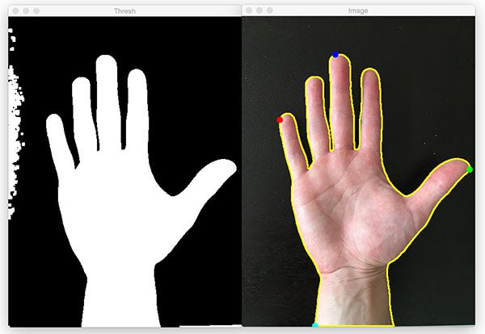
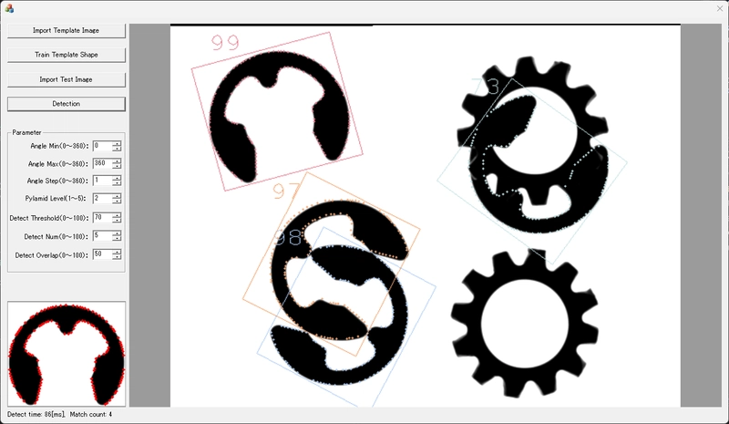
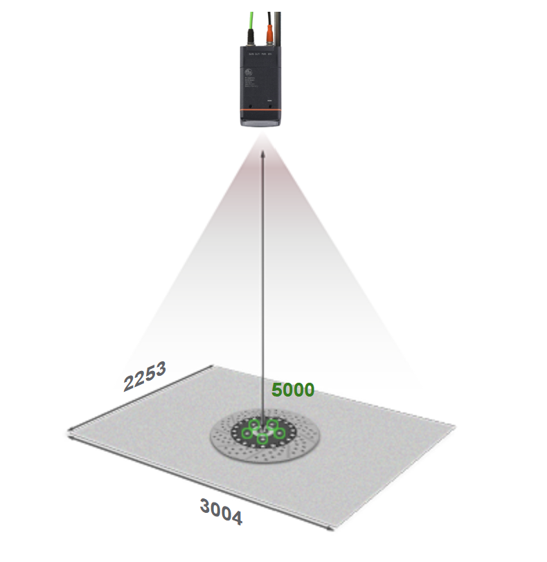

Primary objective: develop and deploy a standalone 2D computer vision system capable of production-level product inspection, with seamless integration into Gentex's existing manufacturing automation infrastructure.
Day-to-day responsibilities
Vision System Design
Programmed a Python / OpenCV vision system as a proof of concept before transitioning to an industrial platform.
Automation Cell Development
Developed robot control sequences, designed end-effectors and fixtures, and integrated vision into prototype cells.
Manufacturing Support
Sustained product manufacturing processes and maintained technical documentation for production teams.
The project
At Gentex, I developed an automated vision inspection system designed to enhance an existing manual inspection process. Working with manufacturing engineers, I identified the inspection points where computer vision could improve accuracy and throughput, then engineered the system to operate robustly in a real manufacturing environment with minimal human intervention.
The prototype was built in Python using OpenCV and deployed on a Raspberry Pi 5 as a controlled-environment proof of concept. Under the hood it combined contour detection and template matching to compare captured images against predefined quality tolerances. A custom GUI surfaced real-time monitoring, inspection logs, and operator controls — making the prototype usable as a self-contained station for evaluation.


Moving to an industrial platform
After validating the prototype, the next step was transitioning to an industrial-grade vision platform. The selection process balanced performance, ease of integration, and budget against Gentex's manufacturing environment. The chosen system was designed to interface with existing PLCs and robotic controllers over Ethernet/IP and industrial I/O modules.
The industrial solution layered in advanced techniques — adaptive thresholding, morphological operations for feature enhancement, and lens-distortion correction via camera calibration — so the system could measure parts precisely under real production lighting.
With the standalone vision system in place, I worked with the manufacturing engineering team to design and prototype automation cells: programming Fanuc robots to handle parts, integrating the vision system for real-time inspection, and designing custom end-effectors for reliable part manipulation. The result was a flexible cell prototype capable of complex inspection tasks with minimal human intervention.
"Plug-and-play" communication between the vision system and the Fanuc controller wasn't available within the internship's timeframe. To unblock continued development, I wrote Python firmware for a microcontroller that translated Ethernet/IP traffic into discrete I/O the Fanuc could consume — enabling real-time inspection interaction and object-location feedback during cell testing.

Image credits
- Contour example: PyImageSearch — "Finding extreme points in contours with OpenCV" (Apr 11, 2016).
- Template matching example: ren482, "Fast Shape-based Template Matching," DEV Community (Dec 22, 2024).
- Vision-based inspection example: ifm electronic gmbh, "Area calculator illustration" (© ifm).
Images used for portfolio demonstration purposes only. Gentex logo used for identification only — Gentex Corporation is not affiliated with this site.